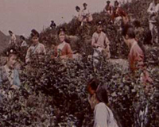
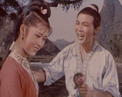
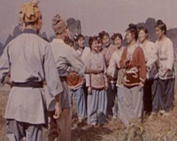

六十年代出品的刘三姐
编 剧：乔羽
导 演：苏里
作 曲：雷振邦
摄 影：郭镇铤 尹志
美 工：童景文 张起旺
摄 制：长春电影制片厂
主要演员：
黄婉秋（饰刘三姐）刘世龙（饰阿牛)
张巨光（饰老渔夫）贺汝瑜（饰管家）
内容介绍
故事说广西壮族歌手刘三姐被恶霸地主陷害落水，沿江飘流，幸被一老渔夫救起收留。三姐的哥哥刘二沿江找寻，好不容易才找到她。于是刘二兄妹与老渔夫一家住在一起，靠采茶、打鱼为生。
恶霸地主莫怀仁企图霸占茶山，他禁止姑娘们上山采茶，还妄想禁歌。三姐提出和莫怀仁对歌，如他能取胜，就可以禁歌。莫怀仁为赢得胜利，以重金请来三名秀才来对歌，但聪明的三姐凭自己的智慧把三个酸秀才斗得狼狈不堪。
莫怀仁不甘心失败，又令爪牙把三姐抢到家里进行威迫利诱，三姐毫不屈服。
老渔夫之子阿牛夜闯莫府，救出三姐。阿牛和三姐在生活中萌生了真挚的爱情，他们用山歌表达了内心的情感，迁居到新的地方，开始了新的生活。
《刘三姐》将有多种“版本”
邓建国打造《新刘三姐》
电影《刘三姐》上个世纪六十年代曾轰动整个东南亚，影响至今不衰。广东巨星影业公 司老板邓建国眼下要对“刘三姐”这个已经家喻户晓的形象进行二度创作，欲打造新时代背景下的2001版刘三姐。
电影《新刘三姐》将描 述一段感人肺腑的浪漫爱情故事。新刘三姐是一位生活在90年代的任性、调皮但同时敢爱敢恨的漂亮女孩，为了逃避刘二姐和母亲的包办婚姻，找寻自己的真爱而 不惜与家庭决裂。她先后两次在婚礼上逃婚，并最终通过“抛绣球选情郎”这一古老的方式找到了自己心中的另一半。《新刘三姐》与老版《刘三姐》最大的不同 是，《新刘三姐》将突出故事情节，而不再以传统的“对山歌”为线索。据邓建国透露，《新刘三姐》全片将不会出现一首歌。《新刘三姐》除着力表现桂林山水美 景外，还将出现千名准新郎争抢绣球的盛大场面。整部影片风格轻松、热闹，极富时代气息。
邓建国介绍，之所以选择拍“新刘三姐”题 材，主要原因是桂林山水的确美不胜收，让人流连忘返，且仍有极大推广价值。
张艺谋歌剧演绎《刘三姐》
张艺谋描述了一幅让人神往的图景：舞台在实景当中，坐在剧场放眼看去，山水尽收眼 底，成为舞台的一部分。“歌剧和山水应当有十分自然的关系，而不应当成为山水前的一个摆设。将来这出歌剧最大的特点将会是‘自然中漓江人的生活’状 态。”
电影《刘三姐》影响巨大，如何能够在歌剧中发掘新意？张艺谋说，歌剧会考虑从最原始的民间文化素材出发去发挥它，而将电影作 为一种参考。所以，歌剧和电影从观念的利用、音乐、演唱到故事可能都会有所不同。
但张也充分考虑电影的影响力和民间故事各种版本之 间的共性。“刘三姐首先是个爱情故事，是一个会唱歌的漂亮女子用歌声表达爱情，并反抗禁止唱山歌的迂腐的官府行为的故事。
这个故事 是相当简单的。歌剧里面将会保留一些精彩段落，比如说，对歌是肯定有的，刘三姐和阿牛的爱情故事是有的，一个势力对他们爱情的压迫也是要有的。所以，这不 会是一个陌生的刘三姐，但也不能成为简单电影的拷贝，而要有这个世纪的感受。”
黄婉秋注目《新刘三姐》命运
17岁时因主演电影《刘三姐》而声名鹤起的黄婉秋，40年来的荣辱悲欢 都与“刘三姐”这个艺术形象紧密相连。现任广西壮族自治区文联副主席、桂林市文化局副局长的黄婉秋意味深长地说：“名誉、职务都是暂时的，只有刘三姐是永 恒的”!
黄婉秋坦诚地表达了对投拍《新刘三姐》的看法。她说：“谁拍刘三姐 都可以，说明她有魅力。但不能失去原型的真实”。黄婉秋深情地谈到：“刘三姐是民族文化艺术的魂宝，大家都应该爱护!”她认为，少数民族历史和现实中有无 数好的创作题材，何必要重复呢?应该塑造更多少数民族优秀女性的形象，讴歌她们自强向上的精神，激励广大群众。她说，即使要重拍《刘三姐》，也应该从艺术 上超越过去，有突破。否则，就会破坏“刘三姐”这个美好的形象。“刘三姐并没有逃婚，她是用山歌与封建努力作斗争。”作为文艺界的老委员，黄婉秋呼吁：全 社会要创造一个鼓励出佳作的环境，反对低俗化、庸俗化的倾向。“以德治国重要，以德搞文艺创作也非常重要。”
80年代后期以来，黄婉 秋还一直在探索文化产业化的路子，做过许多尝试。比如成立刘三姐集团、刘三姐艺术团等，有成功也有失败。目前，她代表刘三姐艺术团正在与阳朔县有关方面洽 谈，把电影《刘三姐》中刘三姐与阿牛哥对歌抛绣球的大榕树及其附近场地租下来搞经营。距阳朔县城8公里的大榕树，这些年给那里的乡亲们带来了不少财富。黄 婉秋计划在大榕树周围建一个地道的壮族村寨，里面有刘三姐、莫老爷家的房屋。她还准备把《刘三姐》的导演苏里(已82岁高龄)、阿牛哥的扮演者(70岁) 请到这里，同她一起为游客创造一个身临其境的美妙去处。她说：“在这样的景致中、歌声中和情意中，度过自己的晚年，我会是最幸福的!这里也将带给游客美好 的感受。”
电影《刘三姐》、黄婉秋出神入化扮演的“刘三姐”，让全中国乃至全世界人民从一个侧面认识了壮族。就象《五朵金花》之于大 理白族，《阿诗玛》之于云南彝族，《刘三姐》的艺术价值无可衡量。让我们珍爱祖国文艺百花园中的民族艺术奇葩!愿有更多更灿烂的民族之花盛开!
我们将注目《新刘三姐》的问世，并希望投资和创作的有关人士广泛听取各方意见，制作真正受各族人民欢迎、经得起时间考验的艺术精品。
壮乡寻访刘三姐
作为壮家姑娘的代表，刘三姐美丽聪颖、勤劳勇敢的歌 仙”形象，深为广大观众喜爱。
然而，历史上是否真有刘三姐其人呢?为寻根究底，不久前笔者专程到传说中刘三姐的故乡宜州市作了一番探 访。
三姐的原刘三●，志载唐时下视人在清道光八年(公元1828年)的《庆远府志》和民国七年(公元1918年)的《宜山县志》 上，增多这样记载着：“刘三●，相传唐时下枧村壮女，性爱唱歌，其史恶之，手攀一藤，其兄将藤砍断，三落水，流至梧州，州民捞起，立庙祀之，号为龙母， 甚灵验。
“”者，壮语读“达”，是未婚女性的专用词头，意为姑娘。“刘三”，就是刘三姐姑娘。后人尊称，就成了“刘三姐”了。
1996年中国国际文化艺术中心为摄制20售大型音乐剧《刘三姐》，在下枧村下游建了一个影基地，取名“流 河寨”。寨中再现了当年刘三姐、李小牛、媒婆的草舍木屋和和莫老爷的华府，同时还再现对歌现场。刚远远望见河边村落，“刘三姐”已率众姐妹候在高高的寨 口，将迎客山歌唱得缠缠绵绵地随风送了过来……
戏剧浪漫塑三娘电视锦上再添花
据民间传说，当年曾有桃、李二 位远方歌王慕名至宜山寻三姐对歌，在下枧河边向一洗衣姑娘打听三姐下落，不料这姑娘正是三姐，她以歌作答：姓桃不见桃结果，姓李不见李花开。河边洗衣刘 三姐，问你歌王哪里来?啊里来，问你船来是路来?般来摇烂几把桨，路来走烂几双鞋?
歌王亦以歌作对，并自夸带来很多歌书，定会 唱赢三姐。三姐于是又唱：“你歌不比我歌多，床头床尾两三萝。只因那年发大水，歌书塞断九条河”。
据《宜州市志》记载，最早出现的 《刘三姐》剧本，是1956年秋由宜山龙塘民间艺人黄文祥编创的出歌对唱歌《刘三姐》，当时在乡中作了演唱。这年冬天，宜山克强中学校长邓昌龄创作了彩调 剧《刘三姐》，先后荐给了宜山人民桂剧团和柳州彩调艺术团。
1957年5月，宜山人民桂剧团根据宜山高中教师肖甘牛搜集整理的《刘 三姐的故事》，以“搭桥”的形式排演了桂剧《刘三姐》，剧中唱词和道白，均由扮演者在演出时根据剧情发展随机编造。此剧一经演出，当即引起轰动，柳州、桂 林的文艺人士也纷纷前往观摩。此后来，《刘三姐》的戏开始在全广西争相上演，逐渐形成演出热潮。
这股热潮，后来卷入中国电影 界，1960年上半年，电视剧作家乔羽、导演苏金、剧曲家雷振邦一行三人到了宜山县城采风，欲把《刘三姐》彩调改成电影剧本。
乔忌 等人邀请了一批老歌手座谈、演唱，雷振邦有五线谱作了记录。歌手们刚唱完，雷振邦很快就按曲谱重唱了出来，令歌手们都惊叹不已。
乔 羽当时说：广西是亚热带地区，水果生产得天独厚，很多水果品种是外地没有的，最好能就广西的几种物产水果编唱一些问答山歌，以体现地区特点。于是，又邀来 五六位老歌手，让他们即席编歌唱出。结果乔羽选中了几首，其中有民间艺人黄文祥编的“什么结果抱娘项?什么结果一条心……等后来成为广大观众喜爱的对答山 歌。
后来，音乐家贺渌汀于1961年初到宜山考察了一个星期、他白天邀歌手到往处唱山歌，晚上则到体育场和江边听群众对歌，还到刘 三姐故居下枧村作了采访、座谈。
这些艺术家回去不久，就将《刘三姐》搬上银幕。电影一出，立即轰动全国，甚至红到东南亚。